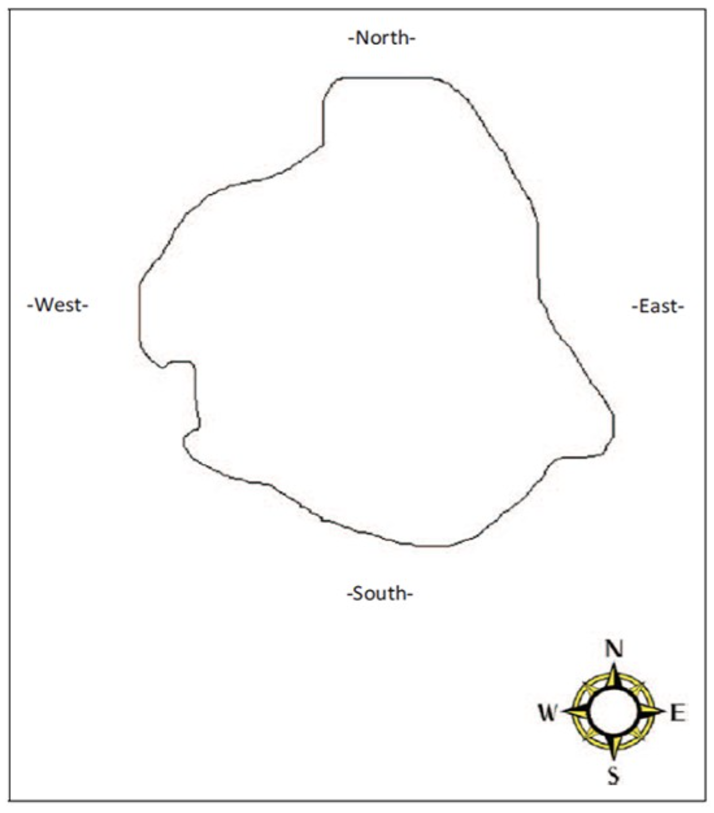
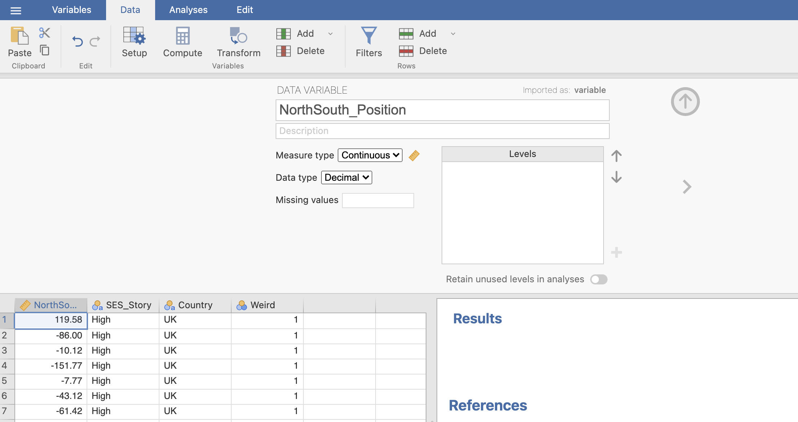
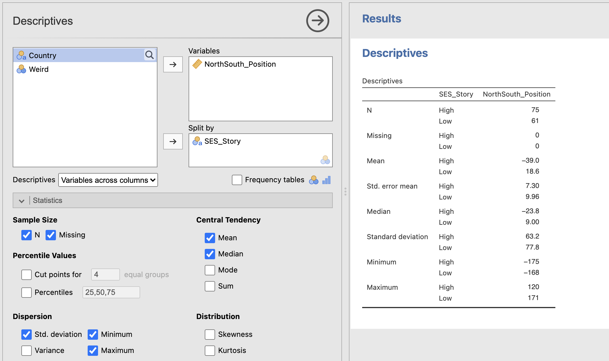
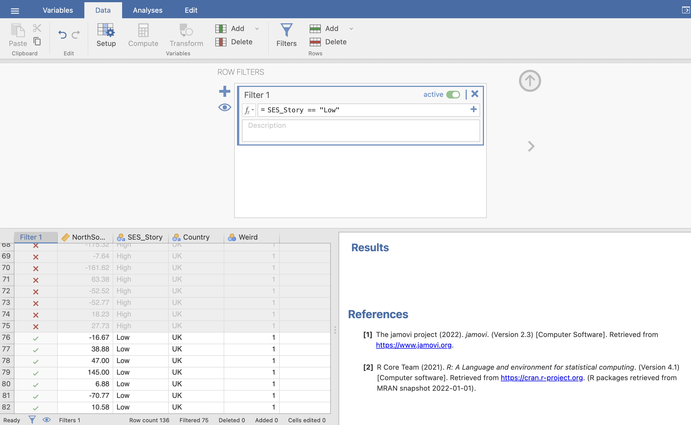
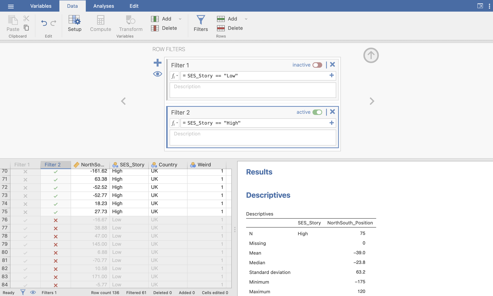
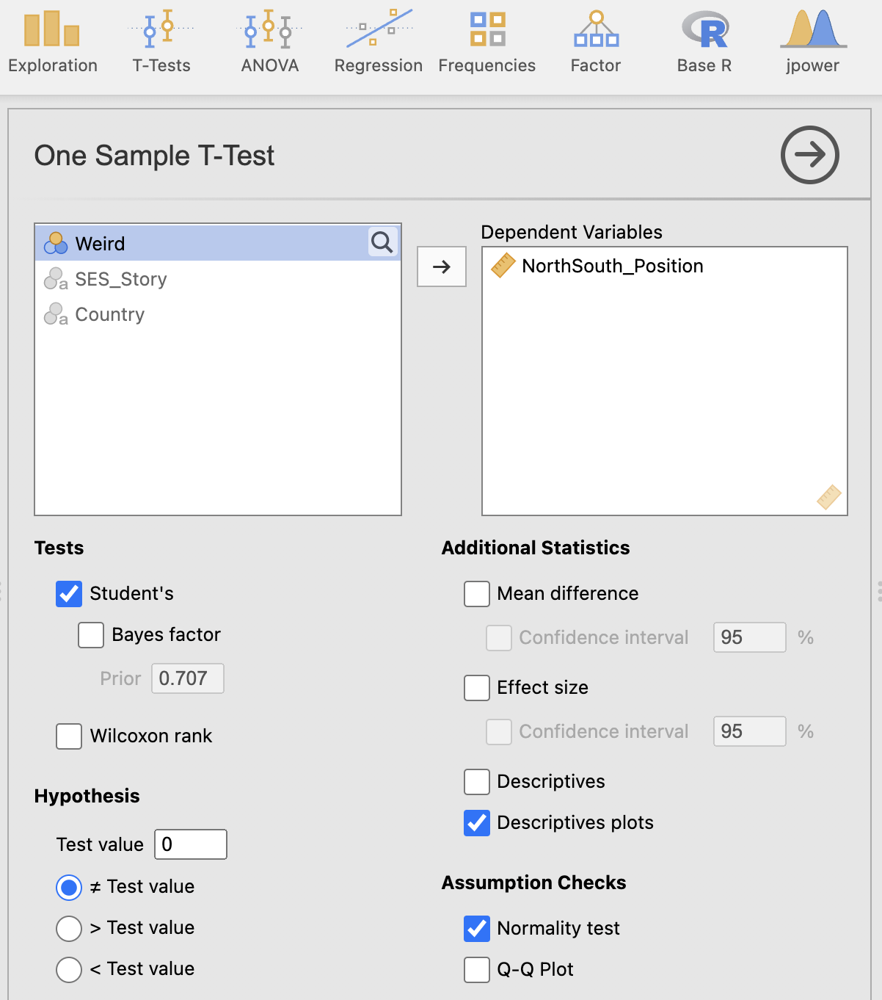
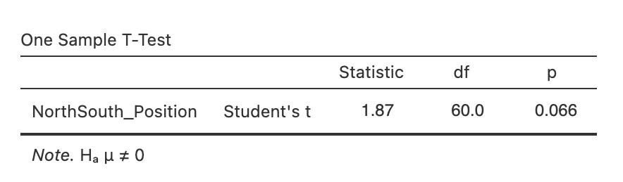
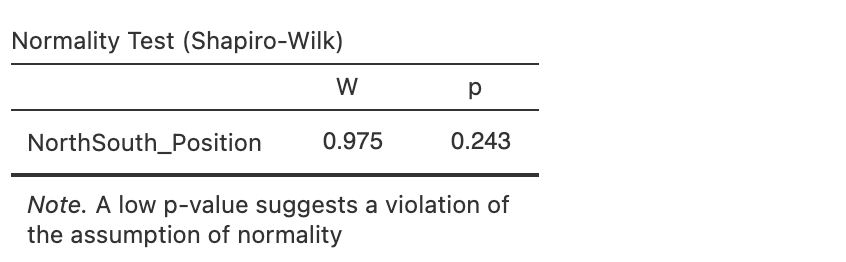
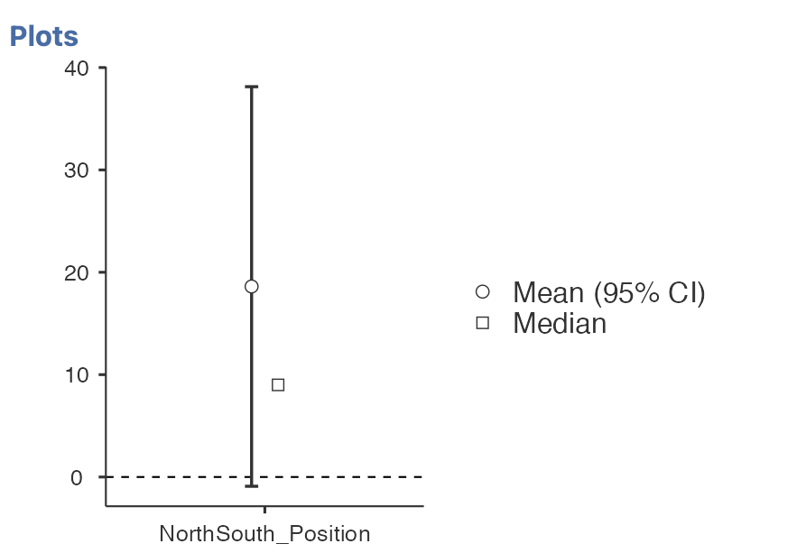
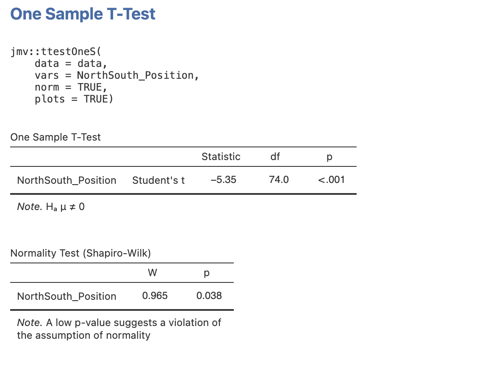

Week 3 : One-Sample t-tests
This week we will explore how to use Jamovi to compute and visualise descriptive statistics from a dataset. This will include some revision on Jamovi from last semester and an introduction on how we can use the R coding language to simplify complex data processing.
| Quantitative Methods | |
|---|---|
| Measures of central tendency | |
| Measures of dispersion and spread | |
| Measures of skew and normality |
| Data Skills | |
|---|---|
| Working with the Rj editor to use R code within Jamovi | |
| Learn the basics about functions and variables in R | |
| Computing descriptive statistics using R |
| Open Science | |
|---|---|
| Validating and working with openly available research data | |
| Create a reproducible data analysis script |
1. The Dataset
Metaphors are often used to help people understand abstract concepts in terms of perceptual experiences. Though this is often useful, it can bias perception and decision making in unexpected ways. For example, North and South are abstract concepts that have a spatial association (north = up, south = down). Participants in the USA have a biased expectation that richer people will live in the north of a city (Meier et al. 2011). However, these expectations are not uniform across all people and cultures and we should not naively generalise this result to all people. A follow up study comparing this effect in participants from the USA and Hong Kong replicated the original effect for American participants but found the opposite effect in people from Hong Kong (Huang, Tse, and Cho 2014).
The Many Labs 2 project (Klein et al. 2018) performed an additional replication of this effect across a wide range of countries. Participants were presented with the following map outline of a city:

and asked to indicate where they though a fictional person would live within the city. Participants were shown one of two descriptions of the person.
“Dr. Bennett lives in the city. He is a wealthy businessman who has travelled the world. He inherited a significant amount of money from a Great Aunt, and was educated at the best schools growing up. He enjoys fine dining and going to the theater on weekends.”
Or
“Mr. Bennett lives in the city. He is unemployed. He was born and raised in the city he now calls home. He struggles to pay the rent each month, and dropped out of high school before graduation. He enjoys a good hot dog and a six pack of beers when he can.”
The first description is a caricature of a person with high Socio-Economic Status (SES) whilst the second is a caricature of someone with a low SES. The hypothesis is that people in the United States and Hong Kong have different demographic knowledge that may shape their metaphoric link between positive association and cardinal direction (north vs. south).
2. The Challenge
This week we will use one-sample t-tests to explore whether participants from the UK would expect people with low or high SES to live north or south of the centre of the city.
Before we start, think about what you would predict about participants from the UK. Is there a reason to expect that people in the UK would associate the north of a city with high SES or vice versa?
Make a note of your answer and the reasons behind it. Note that there isn’t necessarily a correct answer to this question and we won’t ask you for it later.
It is good practice to be clear about our predictions and expectations before starting a data analysis.
3. Getting started with descriptive Statistics
Let’s start by loading the dataset into Jamovi and checking out the data. You can use the file named RMB-2024_computer-practical_huang-2014_country-UK_cond-All.csv.
This dataset has several columns of data. The main column of interest is currently named variable. This represents the y-axis position of the persons expectation about where the fictional character would live. A value of zero represents the middle of the city, positive values represent more northern locations and negative values represent more southern locations.
The other key variable is named factor. This indicates which group the participant was allocated to. This can be either ‘high’ or ‘low’ depending on whether the participant saw a description of a person with stereotypes of high or low socioeconomic status.
This is open-access data and the column names aren’t very informative. It would be better to rename them to something more considered so that we can avoid mistakes later.
Rename the following variables using the editor under the ‘Variables’ tab.
- ‘variable’ should be renamed to ‘NorthSouth_Position’, and
- ‘factor’ should be renamed to ‘SES_Story’.
Don’t include any spaces in the new variable names! this can cause an issue later.

Next, take a look through the data itself. Remember the steps we took in the last couple of weeks. Have a careful scan through the data values and see if you can spot anything that needs to be fixed.
Compute some descriptive statistics on the NorthSouth column. Make sure that you include the standard error of the mean!
You can split the descriptive statistics using a second variable. This

Next, let’s think about what these values can tell us.
4. Data filters in Jamovi
Next, we’re going to ask whether the participants in the either the High or Low SES conditions had a preference towards locating our fictional character in the North or South of the city. This is our one-sample t-test. The NorthSouth_Position is our data variable and the centre point of the city is the comparison value.
First, we need to split out the data so that we can run the t-test using either the Low or High SES conditions, not using both mixed together.
We can do this in Jamovi using a ‘Filter’. Jamovi provides some great documentation on data filters on their website. Take a few minutes and read through the info on ‘Row Filters’ on this page.
The most important thing about filters is that they are reversible. We can apply a filter to run an analysis on a subset of the data without actually changing the dataset itself. This means we could make several different filters and turn them on and off to repeat the same analyses on different sections of the dataset. Convenient!
Following the guidance on the Jamovi documentation on data filters, create a filter to select ONLY the participants who heard the low SES story.
The result should exclude the first 75 rows from your dataset, you can confirm this by looking at the ticks and crosses in the ‘Filter’ column, and by inspecting the values in the very bottom of the window.

Note that your analyses in results windows will automatically update when you apply a filter to the data. With the filter applied, you will only see the descriptive statistics for the ‘Low’ SES_Story groups.
If you click the ‘active’ toggle in the ‘Filter’ window you can turn the filter off and your analysis will return to its initial state.
With your first Filter turned OFF, create a filter to select ONLY the participants who heard the High SES story.
The result should now exclude the last 61 rows from your dataset.
 You can turn your filters on and off to see how this changes the data available for the analysis, though turning both filters on will exclude all the data in this case…
5. One-Sample T-tests
Now we’re ready to test our hypothesis! remember that the equation for a one-sample t-test is the following:
\[ t = \frac{\text{The sample mean} - \text{Comparison Value}}{\text{The standard error of the mean}} \]
We’re looking at the difference between our observed mean and a comparison value as a ratio to the precision to which we have estimated our observed mean.
Our descriptive statistics output contains the mean and standard error of the mean for both groups. Our comparison value is the centre of the city, indicated by a score of 0 (zero).
We all the values required for a one-sample t-test already in the descriptive statistics! For the ‘Low’ SES_Story condition, we have:
- Group Mean = 18.6
- Comparison Value = 0
- Standard error of the mean = 9.96
So, the one sample t-test value is:
\[ t = \frac{18.6 - 0}{9.96} = 1.867 \]
Can you compute the t-value for the High SES Story group using a calculator or Rj?
First, get the three values that you’ll need for the computation. These are the comparison value and the mean and standard error of the mean for the High SES group.
The individual values are
- Group Mean = -39.0
- Comparison Value = 0
- Standard error of the mean = 7.30
so the t-value is
\[ t = \frac{-39.0 - 0}{7.30} = -5.342 \]
6. One Sample T-tests in Jamovi
Before going any further - make sure that your data filter is set to include only the data from the ‘Low’ SES_Story condition.
Of course, we will normally compute the t-test using Jamovi as rather than relying on hand calculations. We can do this by opening the ‘One Sample T-Test’ option under the ‘Analysis -> T-Tests’ menu on the top ribbon.
Open the One Sample T-Test option now, and drag the NorthSouth_Position variable over to the ‘dependent variables’ box. The result should appear on the right hand side. Before we inspect the result, we should check and add a number of important options to our analysis.

Hypothesis - test value it is critical that we select the correct hypothesis or our test will be meaningless. Our ‘test value’, also known as a ‘comparison value’, is set to zero by default. This is correct for our analysis but may need setting to something else for other analyses. Take care to check it makes sense each time.
Hypothesis - test tail we can also specify whether we’re going to perform a one- or two-tailed test. Here we want to specify a two-tailed test in which the mean does not equal the test value.
Assumption Checks we should add a test to check that our data are normally distributed. Selecting the ‘Normality test’ box will compute a Shapio-Wilks statistic for you
Additional Statistics there are a number of important options here. For now, add the ‘Descriptive plots’ option to your analysis. This will show us a visualisation of the estimated mean and its confidence intervals.
Let’s take a look at the outputs, first the t-test table.

This contains the information we need to report our t-test: the t-value, the degrees of freedom and the p-value.
t(60) = 1.87, p = 0.066
This t-value should match the number you computed by hand earlier on. Note that the footnote of the table reminds us of the hypothesis that we specified. Make sure that this matches what you expect!
Next, the normality check:

This reports the Shapiro-Wilk W statistic and associated p-value. In this case the p-value is not significant which indicates that the data are normally distributed and we’re happy to go ahead with the parametric t-test.
Next, the descriptives plot:

This is a really useful visualisation of our test. We can see the mean of the data (black dot) and the test value (dotted line). We also have the 95% confidence intervals of the estimated mean. We can see that the confidence intervals overlap with the test value - this tells us that it is likely our test will not be significant - according to our confidence intervals, the true population mean might include our test value zero which would indicate no real difference.
Change your data filter to compute the one-sample t-test for the ‘High’ SES_Story condition. The test should update once your filter is on without you having to respecify the test.
Go back to your notes from the start of the session. Do the results match your predictions about whether a UK data sample would expect a high or low socio-economic status people to live in the north or south of the city?
7. Reproducible One-Sample T-tests
Finally - we should make a reproducible version of our analysis using Rj.
Open a new Rj window and add the following line to load the dplyr library.
library(dplyr)Firstly, we’ll need to replicate our data filter to select only the ‘High’ or ‘Low’ conditions for our analysis. We covered this in detail last week - if you need a refresher, take a look at the information on selecting rows of data using the filter function from week 2
Let’s build a filter to select only the ‘High’ condition.
library(dplyr)
high_ses <- filter(data, SES_Story == 'High')Next - turn on Jamovi’s syntax mode to display the R code associated with our analyses. This should create some R code at the top of each results block.

We can right click on this code to copy it before pasting it into the Rj window. Our code should then look like this:
library(dplyr)
high_ses <- filter(data, SES_Story == 'High')
jmv::ttestOneS(
data = data,
vars = NorthSouth_Position,
norm = TRUE,
plots = TRUE)Some people have encountered an issue with running this code block - if your R session stalls whilst running the code above, please try again whilst removing plots=TRUE.
Apologies - we’re working on a fix for this.
This command runs the function ttestOneS which computes the One Sample t-test. Jamovi has automatically detected that we want to add the normality test and the descriptive plots and included these options in the function call (see norm=TRUE and plots=TRUE).
There is a keyword argument in R for every option in Jamovi - take a look at the jmv library documentation for ttestOneS to see a full list.
Before running the code we need to make one adjustment. The function runs on the full dataset data by default but we want to use our new filtered data high_ses instead. Update the function to take in the filtered data as an input.
library(dplyr)
high_ses <- filter(data, SES_Story == 'High')
jmv::ttestOneS(
data = high_ses,
vars = NorthSouth_Position,
norm = TRUE,
plots = TRUE)Now running the code should output result tables that match our previous analysis. Importantly the form of data preprocessing (the filtering) and the test itself are all clearly specified in the code. Making it easier for others to understand what analysis we have run.
Can you add a code block to compute the one-sample t-test for only the ‘Low’ SES_Story condition
Remember that you’ll need to write a new filter line to create a copy of the dataset with only the ‘Low’ values for SES_Story. You can save this into a variable and pass it in as the data argument to ttestOneS
Your final code should look like this:
low_ses <- filter(data, SES_Story == 'Low')
jmv::ttestOneS(
data = low_ses,
vars = NorthSouth_Position,
norm = TRUE,
plots = TRUE)You can keep adding R code to your script to run multiple analyses at once, this way we can run the t-test for both conditions with out having to go back and forth in Jamovi toggling the data filters on and off.
It takes a little more setup but the R code has some big advantages once you get used to it!
8. Summary
We’ve done a lot of work to consolidate our skills on filtering data and computing one sample t-tests! You should now be able to compute these tests in Jamovi and create reproducible R code.